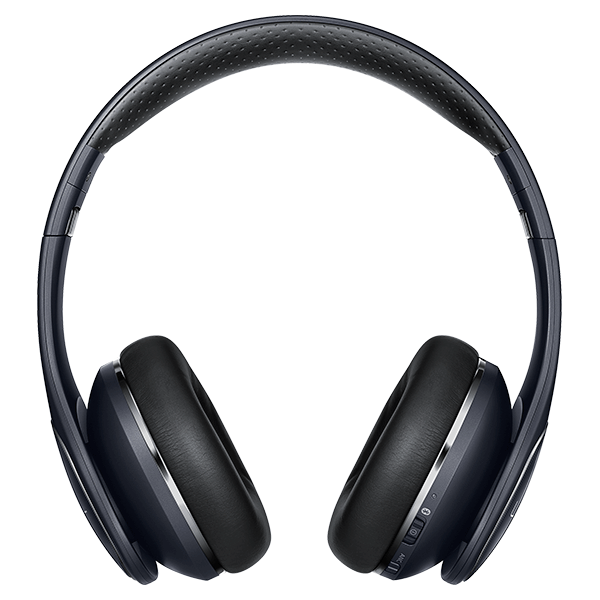
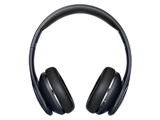
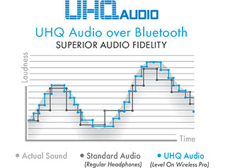
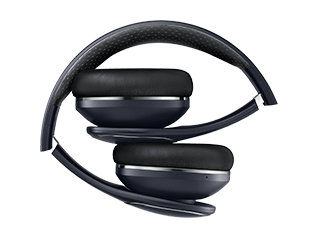
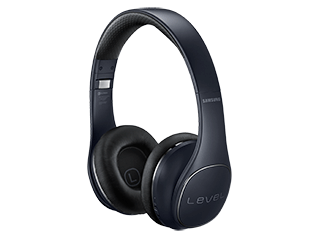

samsung
EO-PN920CBEGUS

Sobre este produto

Cancelamento de Ruído Wireless Headphones
Samsung Nível sobre PRO auscultadores sem fios são perfeitos para os amantes da música que querem casal excelente qualidade de áudio com design elegante. Uma forma ergonómica e cores deslumbrantes significa que você pode desfrutar de uma grande som enquanto usava um pedaço de ótima aparência de engrenagens. Incorporando a tecnologia da Samsung state-of-the-art UHQ suporte de áudio, fones de ouvido sem fio Nível sobre PRO oferecer som de alta qualidade, bem como uma ampla gama de características convenientes, perfeito para ouvir em qualquer lugar. Leve a sua experiência de áudio para um nível totalmente novo com o nível sobre sem fio PRO.
Samsung UHQA Estúdio de Som

Tecnologia Ultra Áudio de Alta Qualidade (UHQA) oferece uma verdadeira experiência de áudio digital de 24 bits com até 2x faixa de freqüência mais ampla do que o som sem fio com qualidade de CD padrão. Combinado com o Active Noise Cancellation, os ouvintes experimentar cores vivas, som sala de concertos. UHQA é compatível com determinados dispositivos Samsung Galaxy.
Estilo & Performance

Projetado com materiais de alta qualidade e acabamentos, o Nível On sem fio PRO transmite prestígio e qualidade. O quadro dobrável conveniente torna fácil de transportar e armazenar, enquanto a cabeça levemente tensionado os torna perfeitos para audição a longo prazo.
Tecnologia inteligente

Controles de toque de comando inteligentes manter controles de música e de telefone fácil, intuitiva e na ponta dos dedos. Modo de falar-in permite que você gire o ruído ambiente ligado ou desligado enquanto ouve áudio. Ideal para situações em que o som externo é útil - como quando se usa transporte público. Compartilhar som permite que você compartilhe o seu streaming de áudio com um segundo nível sobre PRO sem fio, sem fio ou Nível On Nível U PRO fone de ouvido.
A Samsung Nível APP
Use o seu Samsung Nível em fones de ouvido sem fio com o PRO app Samsung Nível. Ele fornece recursos adicionais, como SoundAlive (Sound Effect), volume do monitor e Text-To-Speech quando conectados com fones de ouvido Bluetooth Samsung. (Algumas funções deste app pode não ser suportado, dependendo do dispositivo.) Desenvolvido pela Samsung, SoundAlive é um especialmente afinado equalizador de som desenvolvido para proporcionar um som mais rico, mais completa, otimizando as configurações para uma ampla gama de gêneros musicais. SoundAlive pode ser configurado para mudar automaticamente com cada música ou ajustada manualmente para criar uma experiência mais original. Com 25 efeitos sonoros diferentes, incluindo rock, pop e jazz, você pode personalizar a sua música para os seus vários modos e gostos musicais.